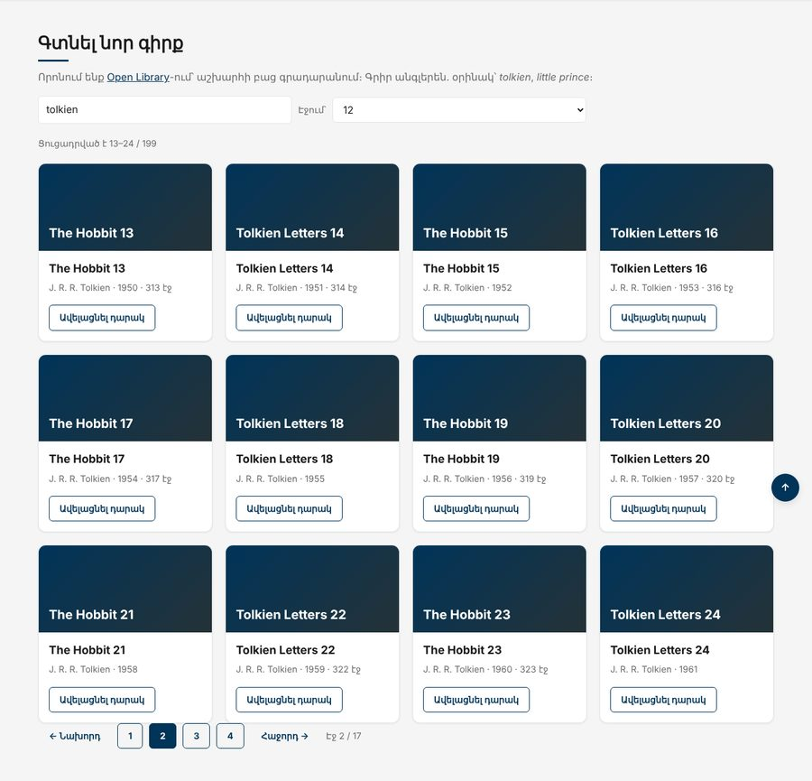

Տնային աշխատանք · JS Դաս 21 · մինի-նախագիծ
«Գտնել նոր գիրք» բաժինը որոնում է աշխարհի բաց գրադարանում՝ Open Library-ում։ Հարցման պարամետրեր, էջավորում, debounce, AbortController մրցավազքի դեմ, և արդյունքից՝ դարակ ֆորմայի միջոցով։
Դաս 01–21․ URLSearchParams, էջավորում, մրցավազք, AbortController, API շերտ։ Քեշը՝ Map-ով՝ Դաս 23-ում։

Աշխատիր քո կայքում (կամ նախորդ դասի օրինակում)։ CSS-ը տրված է, որ կենտրոնանաս JS-ի վրա․ HTML/CSS-ը արդեն գիտես։
starter/css/books-21.css — CSS-ը, որ ավելանում է այս դասինstarter/pages/books.html — «Գրքեր» էջի markup-ը (JS չկա, միայն <script>-ները)starter/sample-response.json — Open Library-ի պատասխանի օրինակhttps://openlibrary.org/search.json?q=tolkien&page=1&limit=12&fields=...numFound (ընդհանուր) և docs։ Օրինակ պատասխան՝ starter/sample-response.jsontoBook(doc)-ը լրացնում է բացերըexport function buildUrl(base, params = {}) {
const clean = Object.fromEntries(
Object.entries(params).filter(([, value]) => value !== "" && value !== null && value !== undefined)
);
const query = new URLSearchParams(clean).toString();
return query ? `${base}?${query}` : base;
}{ query, page, limit, total }limit՝ page = 1controller.abort(), իսկ AbortError-ը սխալ չէdisabled| Սխալ | Ինչպես ուղղել |
|---|---|
| Երբեմն երևում են հին արդյունքներ | Մրցավազք․ հին պատասխանը եկավ նորից հետո։ AbortController |
AbortError կարմիրով Console-ում | Բռնիր և լուռ անտեսիր․ if (error.name === "AbortError") return |
| Հայերեն հարցումը փչացնում է հասցեն | Ձեռքով մի գրիր `?q=${query}`․ URLSearchParams |
| 5-րդ էջում նոր որոնում՝ դատարկ | Նոր որոնման դեպքում page = 1 |
Սրանք Դաս 21-ի տնային աշխատանքի կետերն են։ «մինի-նախագծում» նշվածները արդեն կատարել ես վերևի քայլերում, մնացածը կատարիր առանձին ֆայլերում։
buildUrl(path, params) ֆունկցիան։ Ստուգիր 5 տարբեր դեպքով, ներառյալ դատարկ և հայերեն արժեքներով։ մինի-նախագծում/posts?_page=1&_limit=10։ Կարդա X-Total-Count վերնագիրը և տպիր էջերի քանակը։is-active դասով։ մինի-նախագծումdisabled վիճակներով եզրային էջերում։ մինի-նախագծումAbortController։ Ստուգիր՝ DevTools → Network-ում պիտի տեսնես canceled հարցումներ։ մինի-նախագծումapi.js մոդուլ՝ getPosts, getPost, getUsers, createPost մեթոդներով։ մինի-նախագծումpaginate ֆունկցիան։ մինի-նախագծումMap օբյեկտում պահիր արդեն բեռնված էջերը և կրկնակի հարցում մի՛ ուղարկիր։ Ցույց տուր Console-ում՝ «քեշից» թե «սերվերից»։Երբ բաժին 03-ի բոլոր կետերը նշված են, բացիր օրինակը և դրա կոդը example/js/-ում։ Դաս 18-ից օրինակը բացիր Live Server-ով։ Գտիր մեկ բան, որ դու արել ես այլ կերպ, և մտածիր՝ որն է ավելի հասկանալի և ինչու։ Քո լուծումը կարող է տարբերվել և լինել ճիշտ։